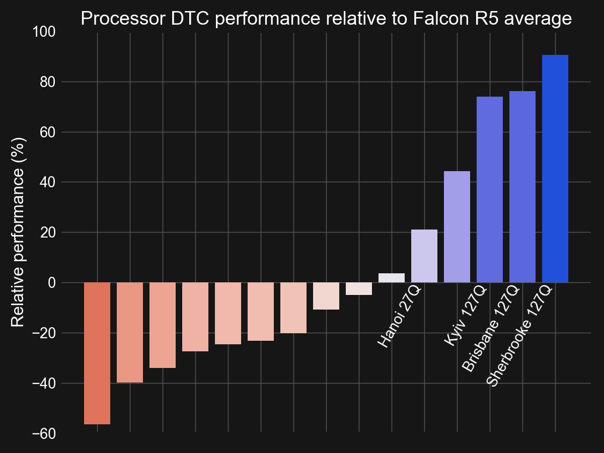

Understanding IBM Quantum hardware calibration schemes#
Background#
A high-quality quantum computer is more than just the sum of its constituent building blocks. How one manipulates the qubits and other components using classical control electronics plays an important role in determining fidelity of circuit operations performed on hardware.
With the introduction of its 127-qubit Eagle R3 processors, IBM Quantum has changed its gate and measurement calibration methods to focus on stability rather than fast gate operations. This new “uniform” calibration technique is designed with an eye toward workflows using Probabalistic Error Cancellation (PEC) [van den Berg et al., 2021, Temme et. al., 2017]. We will see that, compared to calibrations aimed at fast gate times, uniform calibrations reduce idle times within circuits by keeping entangling gate durations constant across almost the whole device.
Frontmatter#
import numpy as np
from qiskit import *
from qiskit.circuit.library import QuantumVolume
from qiskit.visualization import timeline_drawer
from qiskit_ibm_provider import IBMProvider
import matplotlib.pyplot as plt
try:
plt.style.use('quantum-light')
except:
pass
%config InlineBackend.figure_format='retina'
Grab backends of interest#
Here we start by initializing our IBM Provider object:
provider = IBMProvider()
and selecting a 27Q Falcon R5 processor calibrated for fast gate operations, and an 127Q Eagle R3 device calibrated uniformly.
# 27Q Falcon R5 processor
fast_backend = provider.get_backend('ibm_hanoi')
# 127Q Eagle R3 processor
uni_backend = provider.get_backend('ibm_sherbrooke')
Fast calibrations#
The primary difference between a “fast” calibration targeting quick gate operations and a uniform calibrations is in how they set the duration of entangling gates. First let us look at the fast calibrations used on older systems.
First we grab the coupling map and properties of the fast Falcon R5 system:
fast_cmap = fast_backend.configuration().coupling_map
fast_props = fast_backend.properties()
We then query the basis gates to see what type of entangling gate is being used on the system:
fast_backend.configuration().basis_gates
['cx', 'id', 'rz', 'sx', 'x']
Knowing that the device uses CX gates for entanglement, we can now query the properties for the duration of each of the gates along the coupling map. Here we use units of nanoseconds since that is a natural timescale for superconducting devices. Additionally, we will sort the values low->high and make a plot with a line indicating the average duration of a gate:
fast_cx_times = np.array([fast_props.gate_length('cx', edge) for edge in fast_cmap])/1e-9
fast_sorted_times = sorted(fast_cx_times)
fig, ax = plt.subplots(figsize=(12,5))
ax.bar(range(len(fast_sorted_times)), fast_sorted_times)
ax.set_ylabel('CX gate times (ns)')
# Line for average CX time
ax.axhline(np.mean(fast_times), color='k', linestyle='dashed');

We see that gate times can vary by up to a factor of 3x or so, with a mean value of just under 400ns for this machine.
The impact of widely varying gate times can be seen by scheduling a circuit, i.e. adding explicit timing information to a circuit, and viewing it using the timeline_drawer in Qiskit. Here we use a Quantum Volume circuit for demonstration.
qv = QuantumVolume(5, seed=12345)
We transpile the circuit targeting our fast_backend device, schedule the circuit, moving all operations as-soon-as-possible (“asap”), and seeding the transpiler so that the result is reproducible (up to changes in the device properties).
trans_qv = transpile(qv, fast_backend, optimization_level=3,
scheduling_method='asap', seed_transpiler=1234)
If we now draw the circuit we will see that the device has many delay instructions indicating the presence of idle periods in the circuit.
trans_qv.draw('mpl', idle_wires=False)
However, it is not easy to directly tell from these delay instructions how long the idle periods last for. Instead, we can use the timeline_drawer to look at the circuit in terms of system cycle time dt:
timeline_drawer(trans_qv, show_idle=False)
Now it is much clearer! The idle times are clearly visible by the lack of gates at various times in the circuit. The size of these gaps is primarily due to the differences in entangling gate times, where performing the next layer of gates in a circuit cannot run until the longest gate in the previous layer is done executing. So having a really fast gate does not buy one much if the other gates in the circuit are markedly slower. Moreover, having idle periods within a circuit can lead to unwanted dephasing, and nominally requires the insertion of dynamical-decoupling (DD) pulse sequences if the idle time is approaching a microsecond or so.
Finally, let us compute the total duration of our circuit. This can be done using the circuits duration attribute and the dt time of the device found in the configuration:
trans_qv.duration*fast_backend.configuration().dt
1.1445333333333332e-05
Uniform calibrations#
Having looked at fast calibrations, we are now in a position to see what properties a uniformly calibrated device has. Like before, we grab the coupling map and properties of the system:
uni_cmap = uni_backend.configuration().coupling_map
uni_props = uni_backend.properties()
and query the basis_gates for the entangling gate used by the device:
uni_backend.configuration().basis_gates
['ecr', 'id', 'rz', 'sx', 'x']
Unlike before, where the fast calibration device used a CX gate for entanglement, here we see that the uniformly calibrated Eagle R3 system utilizes an echoed cross-resonance gate (ECR). The relationship between the CX and ECR gates can be found using the transpiler:
qc = QuantumCircuit(2)
qc.cx(0, 1)
transpile(qc, basis_gates=['ecr', 'x', 'sx', 'rz']).draw('mpl')
From above we see that a CX gate is equal to a ECR gate up to a handful of single-qubit gates. In practice, the single-qubit gates will be absorbed with other single-qubit gates in the transpilation process. As such, for things like timing, we can really think of the ECR and CX gates as being one-to-one. Using this, let us repeat the above, and look at the duration of ECR gates across the full device, keeping the mean value from the fast_backend for use as a reference:
uni_cx_times = np.array([uni_props.gate_length('ecr', edge) for edge in uni_cmap])/1e-9
uni_sorted_times = sorted(uni_cx_times)
fig, ax = plt.subplots(figsize=(12,5))
ax.bar(range(len(uni_sorted_times)), uni_sorted_times)
ax.set_ylabel('ECR gate times (ns)')
# Mean CX time from the fast backend above
ax.axhline(np.mean(fast_times), color='k', linestyle='dashed');
This is quite a bit different than we had before. For all but a handful of gates, the duration of the gates is uniform across the machine (hence the name). We also see that the gates are about 120ns longer than the average CX gate on the fast calibrated system. So we would expect the total duration of a circuit to be longer than one executed with fast calibrated gates.
Let us now transpile our Quantum Volume circuit against the uniform backend and see what the result looks like.
trans_uni = transpile(qv, uni_backend, optimization_level=3,
scheduling_method='asap', seed_transpiler=1234)
trans_uni.draw('mpl', idle_wires=False)
We can see that the total number of delay instructions on the active qubits in the circuit is much fewer than in the fast calibrated circuit. Inspection via the timeline_drawer indeed shows that the circuit is much more tightly packed.
timeline_drawer(trans_uni, show_idle=False)
Because each ECR gate is longer than the average CX gate on our fast calibrated machine, we expect the circuit to be longer. However, in this case it is not by much (~400ns):
trans_uni.duration*uni_backend.configuration().dt
1.5075555555555554e-05
Layered circuits#
The primary aim of uniform calibration is improve device stability while maintaining high-fidelity in algorithms / applications utilizing circuits with layered structures. Such structures are common, especially in domains such as Hamiltonian simulation, and in general algorithms that make use of circuits with repeated structure. Gates with uniform durations are a natural fit in this context. For example, consider the following layered circuit
num_qubits = 8
qc_layered = QuantumCircuit(num_qubits)
for i in range(num_qubits):
qc_layered.rx(0.95*np.pi, i)
for i in range(0, num_qubits-1, 2):
qc_layered.rzz(np.pi/8, i, i+1)
for i in range(1, num_qubits-1, 2):
qc_layered.rzz(np.pi/8, i, i+1)
for i in range(num_qubits):
qc_layered.rz(np.pi/3, i)
qc_layered.draw('mpl')
The circuit requires pairwise entanglement between qubits, which takes two layers of gates (CZ in this example) to implement. Transpiling it on a fast calibrated device yields a very short circuit, yet once again has idle periods due to the differing CX gate times.
trans_fast = transpile(qc_layered, fast_backend,
optimization_level=3, scheduling_method='alap',
seed_transpiler=1234)
timeline_drawer(trans_fast, show_idle=False)
In contrast, transpiling for a uniformly calibrated machine gives a denser circuit.
trans_uni = transpile(qc_layered, uni_backend, optimization_level=3,
scheduling_method='alap',
seed_transpiler=4321)
timeline_drawer(trans_uni, show_idle=False)
However, once again, because the gates on our uniform device are slower than the fast CX gates, the circuit ends up being quite a bit longer. In the example above it is ~60% longer in total time.
Performance in practice#
We have seen that a uniform calibration leads to, in general, denser, but longer circuits. Dense is good, as idle qubits lead to dephasing. However, all else being equal, longer gates equal larger error rates, and circuit comprised of these gates is longer in duration and the circuit is takes a larger fraction of the systems T1 time.
Looking at the actual device data, one finds that the error rates between the fast calibrated Hanoi system and the uniform Sherbrooke are more or less the same on average, with a small edge toward Hanoi. However, this is still pretty good given that Sherbrooke has nearly 5x the number of qubits. To understand this, one can look at the median T1 time for Sherbrooke and see that it is about 60% longer than Hanoi, i.e. 274us vs 172us. So if coherence is the limiting factor, then the 2Q error rates being on par makes some sense.
Looking at only error rates of 2Q gates (as well as measurements) is a reductionist view of how a quantum device works. In practice, understanding the impact of noise sources goes beyond simply looking at the sum of components. To see this, we will look at executing layered circuits like those above, as done in a recent paper on characterizing quantum systems using discrete time crystals. We have run these layered circuits on nearly every IBM Quantum system, and can see directly how our fast and uniformly calibrated machines stack up to each other.
{kind=link}
The above highlights the performance of each system relative to an average performance number set by the current set of 27Q Falcon R5 processors. We can see that, while both Hanoi and Sherbrooke perform above average, Sherbrooke is much more performant than Hanoi, despite have circuits of longer duration! This is a device-wide metric, showing full system performance. While Sherbrooke is the best deployed IBM Quantum system to date, other uniformly calibrated 127Q Eagle R3 systems, also labeled, show performance on-par. The above performance benefits are not entirely due to calibration differences. However, because quantum gates are at the very heart of quantum circuit execution, their calibrations play an outsized role, and the performance to date indicates that uniform calibrations are a step in the right direction.